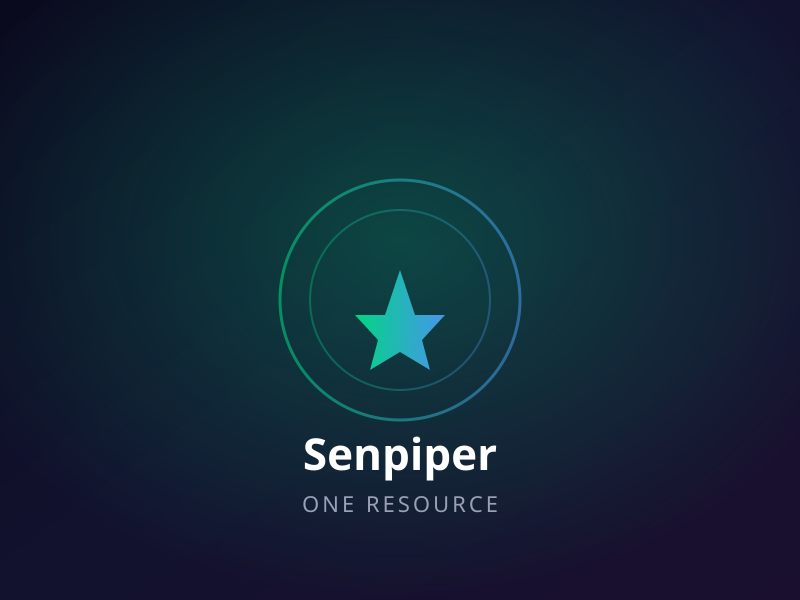

Sole mobile lead for the iOS and Android apps of One Resource, Senpiper's multi-tenant low-code platform for forms, workflows, and business process automation used by government, consulting, and banking clients.

One Resource serves demanding enterprise clients across government, consulting, and banking. The original codebases would not build locally, carried no knowledge-transfer handoff, and were riddled with workarounds, duplicated logic, and non-modular code. The form engine was driven by a deeply nested recursive JSON schema that bundled styling, dependent keys, and workflow definitions together — forcing per-client branches and parallel fixes on every platform change.
Shared schema parsing & form runtime
Thin native iOS UI layer
Native Android UI layer
Per-client config & analytics
Tenant-specific flows (Beat)
Forms, workflows, automation
Claude, Codex, Ollama orchestration